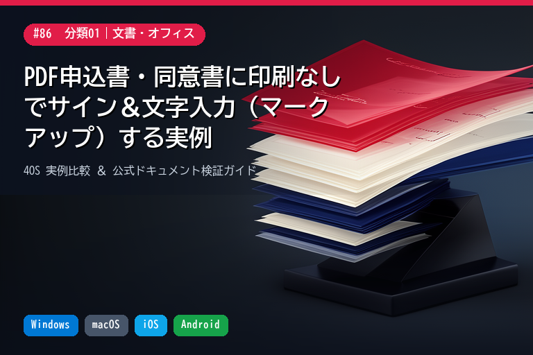

#86｜分類01: 文書作成・オフィス業務・事務作業 2026-11-26

PDF申込書・同意書に印刷なしでサイン＆文字入力（マークアップ）する実例｜Windows・macOS・iOS・Android
「PDFの申込書が届いたけれど、わざわざ印刷して手書きし、スキャンして送り返すのは面倒……」
「スマホやPCだけで完結できる、スマートな署名方法はないの？」
こうした悩みを持つ方は非常に多いです。特にリモートワークやDX（デジタルトランスフォーメーション）が進む現代では、紙のやり取りを減らすことが求められています。
この記事では、特別な有料ソフトを導入することなく、各OSの標準機能だけでPDFにサインや文字入力を行う具体的な手順を徹底解説します。Windows、macOS、iOS、Androidそれぞれの操作を比較しながら、最も効率的なワークフローをマスターしましょう。
4OS比較早見表
| OS | 推奨アプリ・ツール | サイン方法 | 文字入力方法 | 保存の注意点 |
|---|---|---|---|---|
| Windows 11 | Microsoft Edge | ペンツール（手書き） | テキストボックス挿入 | 「印刷→PDF保存」を推奨 |
| macOS | プレビュー (Preview) | ペンツール（手書き） | テキストツール (A) | 名前をつけて保存で保持 |
| iOS | ファイルアプリ | マークアップ（ペン） | テキストボックス追加 | ファイルに移動で確定 |
| Android | Google PDF Viewer / Drive | 編集機能（※機種依存） | テキスト入力 | 保存・共有ボタンで確定 |
1. Windows 11 での実例手順
Windows環境では、専用のPDF編集ソフトをインストールしなくても、標準搭載されている「Microsoft Edge」ブラウザを活用するのが最も確実な方法です。
公式仕様に基づく正確な実例手順
ルート A: Microsoft Edge を介した直接編集（推奨）
1. ファイルを開く: 「ファイル」アプリまたは「Edge ブラウザ」でPDFファイルを開きます。
2. ツールを選択: 上部メニューの「表示オプション」から「注釈ツール」を選択し、ペンアイコンをクリックします。
3. サインと入力: ペンツールでマウスやタッチパネルを使い、手書き風に署名を描きます。文字を入力したい場合は「テキストボックス」を挿入して入力します。
4. 確定（重要）: Edgeの編集内容はブラウザ上での表示であるため、変更を永続化させるには「Ctrl + P（印刷）」を選択し、プリンターを「Microsoft Print to PDF」に設定して保存することで、署名が固定された新しいPDFファイルとして出力されます。
標準機能の制限事項・代替手段
- 制限: Windows標準の「フォト」や「ペイント」ではPDFのレイアウトを維持したまま注釈を入れることが難しいため、必ずEdgeを使用してください。
- 解決策: より高度な編集（ページの削除や結合など）が必要な場合は、Microsoft Storeから無料の「Adobe Acrobat Reader DC」をインストールするのが公式の推奨ルートです。
よくあるトラブルと解決法
- エラー: 「注釈ツールが見つかりません」
- 原因: Edgeのバージョンが古い。
- 対策: Microsoft StoreからEdgeを最新版へアップデートしてください。
- エラー: 手書きサインが消えてしまう（保存されない）
- 原因: ブラウザのキャッシュクリアや、単なる「閉じる」操作でデータが破棄された。
- 対策: 必ず「印刷→PDFに保存」の手順を踏んでください。
- エラー: 文字入力が日本語にならない
- 原因: Edgeの入力言語設定が英語になっている。
- 対策: タスクバーのキーボードアイコンから「日本語」を選択してから入力してください。
- 失敗: ファイルサイズが大きくなりすぎる
- 解決策: 印刷オプションで「グラフィック品質：標準/低」に設定して出力してください。
2. macOS での実例手順
macOSユーザーにとって、PDFへのサインは最も得意な分野の一つです。標準アプリの「プレビュー」が非常に強力な機能を備えています。
公式仕様に基づく正確な実例手順
- ファイルを開く: FinderでPDFをダブルクリックします（自動的に「プレビュー」アプリが起動）。
- マークアップツールを有効化: メニューバーの「表示」>「マークアップツールを表示」（または
Command + Shift + A）を選択します。 - サインと文字入力:
- 「ペンのツール」をクリックして、トラックパッドやマウスで署名を描きます。
- 「テキストのツールのボタン（A）」をクリックし、配置したい場所をクリックして文字を入力します。
- 保存・送信: メニューバーの「ファイル」>「名前をつけて保存」を選択し、PDF形式で上書き保存します。プレビューは変更内容を保持したまま保存可能です。
標準機能の制限事項・代替手段
- 制限: プレビューアプリ単体では、高度なページ圧縮やパスワード保護の設定には向きません。
- 解決策: 基本的なサインと文字入力であればプレビューで完結します。複雑な編集が必要な場合はAdobe Acrobat等の外部ツールを検討してください。
よくあるトラブルと解決法
- エラー: 「マークアップツールを表示」をクリックしてもツールバーが出ない
- 原因: アプリの不具合または権限の問題。
- 対策: アプリを一度終了し、再起動してください。
- エラー: 手書きサインが崩れる・消える
- 原因: 「名前をつけて保存」を行わずにアプリを閉じたため。
- 対策: 編集後は必ず「名前をつけて保存（PDF）」を実行する習慣をつけましょう。
- エラー: 日本語文字入力ができない
- 原因: キーボードレイアウトの問題、またはフォント設定の不備。
- 対策: タスクバーでキーボードを「JIS」に切り替え、必要に応じて「ページの設定」からフォントを確認してください。
- 失敗: PDFが重すぎる
- 解決策: 「印刷」ダイアログを開き、「PDF」タブ > 「作成」を選択する際、グラフィック品質を「標準」に下げて再生成してください。
3. iOS（iPhone / iPad）での実例手順
モバイル端末でも、ファイルアプリから直接マークアップを行うことが可能です。移動中に書類を受け取った際の対応に非常に便利です。
公式仕様に基づく正確な実例手順
- ファイルを開く: 「ファイル」アプリでPDFをタップします。自動的に「Markup（マークアップ）」画面が表示されます。
- ツールを選択: 右上の「ペンマーク」アイコンをタップし、ペンのツールやテキストツールを表示させます。
- サインと文字入力:
- 「ペンのツール」で署名を描きます。
- 「テキストのツールのボタン」から「A」を選び、「＋」マークをタップして新しいボックスを作成し、日本語を入力します。
- 保存・共有: 左上の矢印アイコン（または完了ボタン）をタップし、「ファイルに移動」を選択。iCloud DriveやGoogleドライブ等に名前をつけて保存した後、メール等で送信します。
標準機能の制限事項・代替手段
- 制限: iOS標準のマークアップでは、複雑なフォント変更や高度なレイアウト調整には制限があります。
- 解決策: より正確な書類作成が必要な場合は、App Storeから「Adobe Acrobat Reader」アプリをインストールして使用することをお勧めします。
よくあるトラブルと解決法
- エラー: 「ペンのツール」がグレーアウトしている
- 原因: iOSのバージョンが古い、またはファイル形式が非標準。
- 対策: OSを最新にアップデートするか、Adobe Acrobat Readerアプリを使用してください。
- エラー: 手書きサインが消えてしまう
- 原因: 「ファイルに移動」を行わずにアプリを終了したため。
- 対策: 必ず「ファイルに移動」で新しいファイルを生成してから送信してください。
- エラー: 日本語文字入力ができない
- 原因: キーボードレイアウトの問題。
- 対策: 画面上のキーボードアイコンから「日本語」を選択し、再度入力を試みてください。
よくあるトラブルと解決法（共通チェックリスト）
| エラー・事象 | 原因の可能性 | 対処法 |
|---|---|---|
| 署名が反映されない | 保存処理を行わず「閉じる」だけ操作した | 必ず「名前をつけて保存」または「印刷→PDF保存」を行う |
| 文字化けが発生する | 使用しているフォントが日本語非対応 | システム標準のフォント（MS Pゴシック等）を選択する |
| ファイルが開けない | ファイルが破損、または保護されている | Adobe Acrobat Readerなどの公式ツールで開けるか確認する |
| サイズが大きすぎる | 高解像度の画像や署名データが含まれている | 印刷設定で「標準画質」に落として再出力する |
まとめ：快適なマルチOS環境を作るポイント
今回ご紹介した通り、現代の主要OS（Windows, macOS, iOS）であれば、特別なソフトを導入しなくてもPDFへのサインや文字入力は十分に可能です。しかし、よりスムーズでプロフェッショナルな事務作業を実現するためには、以下の要素を組み合わせるのがおすすめです。
- Office互換ソフトの活用: 複雑なレイアウトの書類作成は、GoogleドキュメントやMicrosoft 365などのクラウドツールで行い、最後にPDFとして書き出すのが最も安全です。
- PDF編集ソフトの導入: より高度なページ操作やセキュリティ設定が必要な場合は、Adobe Acrobat Reader DC（無料版）をインストールしておくと安心です。
- 周辺機器の充実: PCでの事務作業効率を最大化するには、外付けキーボードによる正確な入力と、大型モニターによる視認性の確保が非常に重要です。特にPDFの細かい文字入力を行う際は、大きな画面があるだけでミスが劇的に減ります。
OSごとの特性を理解し、最適なツールを使い分けることで、紙のストレスから解放されたスマートなワークフローを実現しましょう。
参考文献・公式ドキュメント（一次情報ソース）
本記事の手順・仕様は以下の各OSおよびツールの公式ドキュメントに基づいています。OSアップデートによりメニュー名称や挙動が変わる場合があるため、最新仕様の確認にもご活用ください。
- [Windows] Microsoft Edge 印刷・PDF関連ポリシー公式ドキュメント | Microsoft Learn
- [macOS] Macの「プレビュー」でPDFを結合する - Apple サポート (日本)
- [macOS] Macの「プレビュー」でPDFのサイズを減らす - Apple サポート (日本)
- [iOS] iPhoneの「ファイル」でファイルやフォルダを変更する - Apple サポート (日本)
- [iOS] ショートカット ユーザガイド - Apple サポート (日本)
- [Android] Google ドライブでドキュメントをスキャンする（PDF保存） - Google ドライブ ヘルプ
- [Android] Chrome から印刷（PDF として保存・ページ範囲指定） - Google Chrome ヘルプ